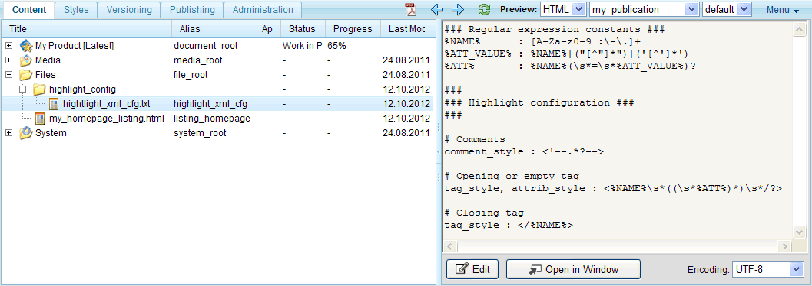
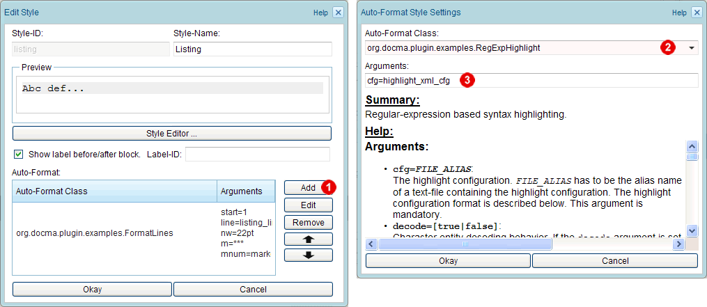
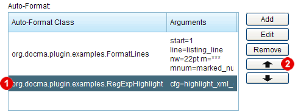
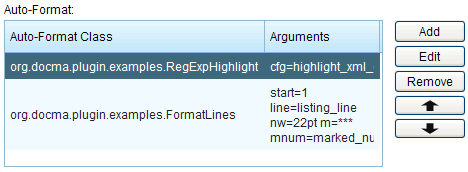
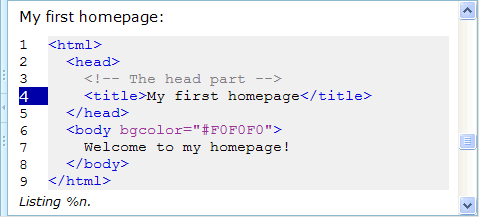

1.13.10. Syntax highlighting
In program listings it is very common to have syntax highlighting, i.e. to highlight keywords, comments and literals. Docmenta supports a regular expression based syntax highlighting which is described in this chapter.
As an example we'll create a simple syntax highlighting for XML/SGML content. The highlight configuration has to be provided as text-file. Therefore create a text-file with following content and upload it in a folder of the product-tree, e.g. to the folder  Files > highlight_config:
Files > highlight_config:
### Regular expression constants ###
%NAME% : [A-Za-z0-9_:\-\.]+
%ATT_VALUE% : %NAME%|("[^"]*")|('[^']*')
%ATT% : %NAME%(\s*=\s*%ATT_VALUE%)?
###
### Highlight configuration ###
###
# Comments
comment_style : <!--.*?-->
# Opening or empty tag
tag_style, attrib_style : <%NAME%\s*((\s*%ATT%)*)\s*/?>
# Closing tag
tag_style : </%NAME%>
%NAME% : [A-Za-z0-9_:\-\.]+
%ATT_VALUE% : %NAME%|("[^"]*")|('[^']*')
%ATT% : %NAME%(\s*=\s*%ATT_VALUE%)?
###
### Highlight configuration ###
###
# Comments
comment_style : <!--.*?-->
# Opening or empty tag
tag_style, attrib_style : <%NAME%\s*((\s*%ATT%)*)\s*/?>
# Closing tag
tag_style : </%NAME%>
To be able to reference the file, assign an alias name to the file-node, i.e. select the file-node, open the context menu and choose  "Edit Properties". To follow the tutorial, enter the alias name "highlight_xml_cfg". The result should be as shown in the following screenshot:
"Edit Properties". To follow the tutorial, enter the alias name "highlight_xml_cfg". The result should be as shown in the following screenshot:

Figure 1.13.75. Uploading the highlight configuration file
the XML/SGML highlight configuration example:
The example configuration starts with the definition of the regular-expression constant %NAME%, which holds the pattern of an XML/SGML element/attribute name. Here, an element/attribute name is defined as a sequence of letters, digits, the underscore, the colon, the dash and the dot character. Note that the XML/SGML specification allows more characters to be used within element and attribute names, however this configuration should be sufficient in most cases and can be extended if needed.
The second definition is the regular expression constant %ATT_VALUE%, which holds the pattern of an attribute value. Here, an attribute value is defined as either a string that follows the rules of an element/attribute name or as a string enclosed in double or single quotes. As you can see, the regular-expression constant %ATT_VALUE% includes the previously defined constant %NAME%. This way it is possible to avoid repetition of expressions. Be aware that a constant has to be defined before it is referenced.
The third definition is the constant %ATT%, which holds the pattern of a complete attribute. A complete attribute is defined as a name which is optionally followed by a = character and an attribute value (with an arbitrary number of whitespace characters in between).
The constant definitions are followed by three highlight definitions: the first assigns the style comment_style to a regular-expression that matches XML/SGML comments (note that the reluctant quantifier *? is used here, to disable the greedy behavior of the quantifier *). The second assignes the style tag_style to a regular-expression that matches opening tags. If an opening tag contains attributes, then these are formatted with style attrib_style. The third assigns the style tag_style to a regular-expression that matches closing tags.
Note that the example highlight configuration may also work for content that does not completely follow the XML/SGML rules. For details on the highlight configuration see the chapter Section 2.8.3, “org.docma.plugin.examples.RegExpHighlight”.
The highlight configuration defines regular expressions for the styles with ID "comment_style", "tag_style" and "attrib_style". Therefore, create inline-styles with these IDs and assign the CSS properties, i.e. the CSS properties that shall be used for XML/SGML comments, tags and attributes. To follow the tutorial, set following properties:
| Style | CSS properties |
|---|---|
| comment_style | color: #808080 |
|
tag_style
|
color: #0000E0 |
|
attrib_style
|
color: #993399 |
Now that the highlight configuration and the highlight styles exist, we have to activate the syntax-highlighting for the listing-style (the style that we have already used in the previous chapters). Therefore, open the style-dialog of the listing-style and click the "Add" button next to the Auto-Format list  . In the opened dialog, select the Auto-Format class org.docma.plugin.examples.RegExpHighlight
. In the opened dialog, select the Auto-Format class org.docma.plugin.examples.RegExpHighlight  and enter the text "cfg=highlight_xml_cfg" in the Arguments input field
and enter the text "cfg=highlight_xml_cfg" in the Arguments input field  :
:

Figure 1.13.76. Adding an Auto-Format entry
Close the "Auto-Format Style Settings"-dialog by clicking the "Okay" button. The new entry is then added after the org.docma.plugin.examples.FormatLines entry that we've created in the previous chapter of this tutorial:

Figure 1.13.77. Added Auto-Format entry
This means the syntax highlighting would be applied after the formatting of the lines. Unfortunately this would lead to unexpected results, because the formatting of the lines cuts the content into blocks, each containing one line. However the regular expressions of the syntax highlighting might require to match more than a single line. To avoid this problem, we first apply the syntax-highlighting and format the lines afterwards. To do this, select the created entry and click the arrow-up button next to the Auto-Format list . This moves the selected entry to the beginning of the list:

Figure 1.13.78. Corrected order of Auto-Format entries
Click "Okay" to close the style-dialog. When you now preview the listing that you've created in the previous chapter of this tutorial, the listing should be rendered with syntax highlighting. Add an XML comment and tag attributes to the listing, to check that highlighting works as expected:

Figure 1.13.79. Previewing the listing with syntax highlighting
This was an introduction to the Docmenta syntax highlighting feature. For additional highlight configuration examples see the Docmenta homepage (http://www.docmenta.org).